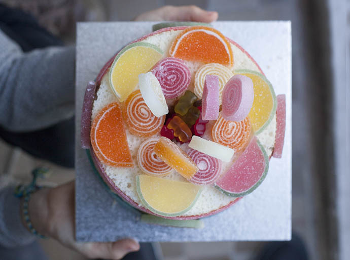
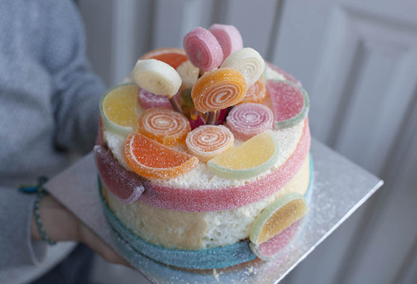

There are days that are sweeter than others! Josefa sweetened my day yesterday with this surprise.




Valentine message for lovers. Cut along the line to make message visible. Cut a heart out of a light cake. Then make it stand in a…
Read more →
An American cheesecake for Valentine's Day. Before stroking the jam on the cooled cake you put some cookie shapes on the cake and take them away…
Read more →
Simple and edible tree decorations. Turn a wire into the desired shape. House, star, heart, tree .... Then you thread the beads of an eatable chain…
Read more →
With the clay that dries on air and a swells a little, you can make eyes for fruits or vegetables. It´s a good idea to encourage…
Read more →
Small ice creams, made with everything we have at home. Clothespins, toothpick, freezer, cube mold and juice!
Read more →
Cheese kebabs with half cherry tomato on cress lawn. Cool fingerfood!
Read more →